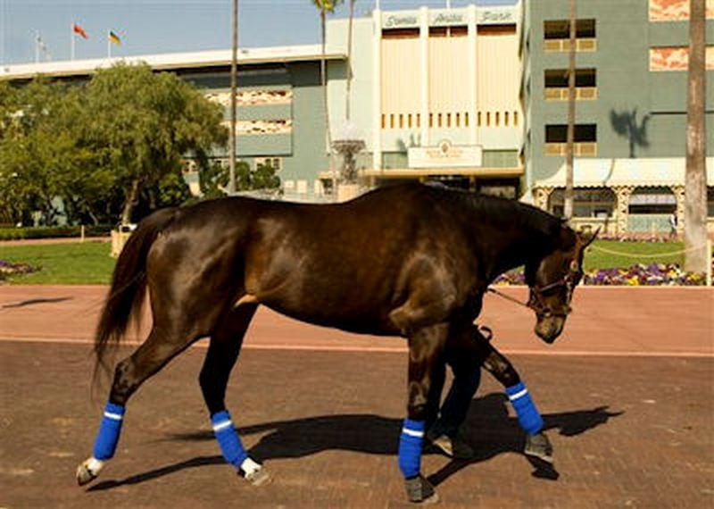

Жеребец Абсент входит в список самых знаменитых коней СССР. С раннего детства он находился под пристальным наблюдением, так как имел хорошую родословную. Его отец был знаменитостью в конкуре. Высокий уровень породности позволил Абсенту в возрасте 6 лет стать рекордсменом. Всего через два года, в 1960 году, конь стал чемпионом Римской Олимпиады, обойдя 17 звезд мирового уровня. С этого момента имя Абсента было на слуху у каждого любителя конного спорта. На 2 следующих олимпиадах Абсент занял 3 и 4 место, соответственно. Благодаря своей природной стати, конь многократно был запечатлен на картинах и в документальном кино.

Лошадь Зеньятта – это одна из самых результативных лошадей современности. Ее результативность составляет 95 %. Свою кличку лошадь получила по названию альбома «Zenyatta Mondatta». Родилась в штате Кентукки 01.04.2004 года. Зеньятта – настоящая дама конного мира. Она спокойна и уравновешенна, никогда не проявляет агрессию. При этом она любит чудить, устраивает своеобразные танцы. В возрасте 3 лет Зеньяттa стала показывать серьезные результаты. В 2007-2010 годах ей не было равных. Главная особенность этой лошади – выверенная техника. Начиная гонку в числе аутсайдеров, она становилась первой на последнем круге, не оставляя соперникам шансов. Главным событием стала награда Бридерз Кап Классик в 2009 году. Имея за плечами громкие титулы: Лошадь Года (2010) и Века, а также Лучшая возрастная лошадь (2008-2010 годы), Зеньятта провалила свое последнее соревнование. Тренер лошади был очень расстроен таким финалом карьеры.